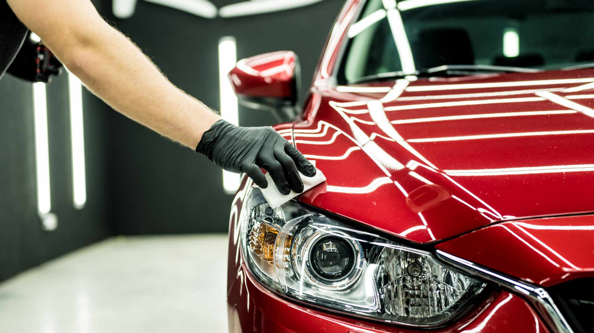
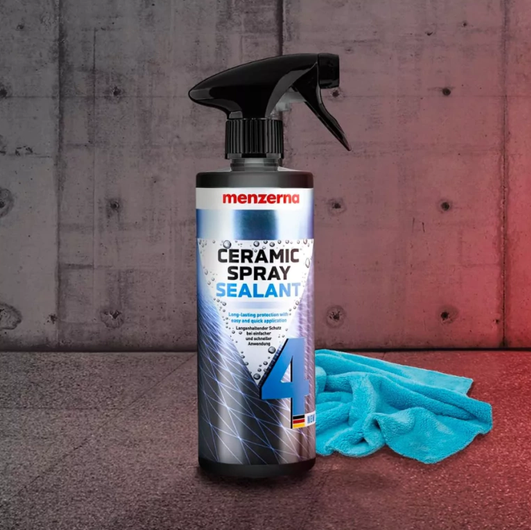
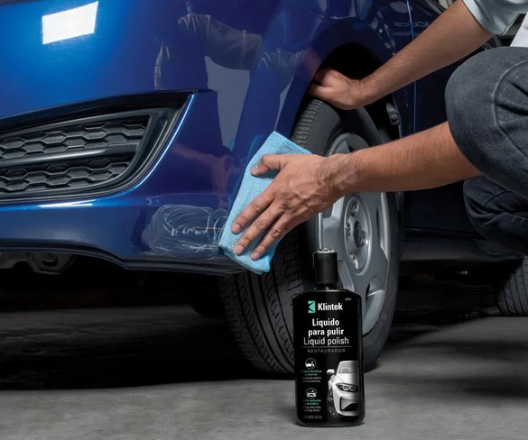
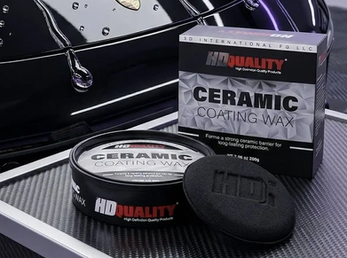
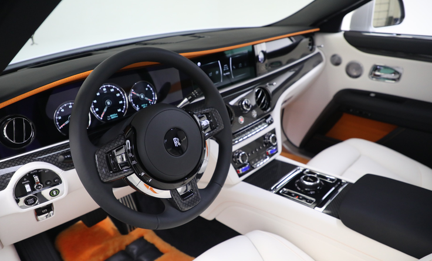
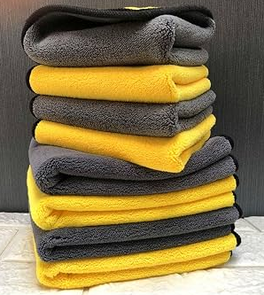

100% SEGURO PARA LA SUPERFICIE
Formulado para proteger acabados premium y capas de barniz

El estándar en preservación automotriz. Diseño para detailers
profesionales y entusiastas que exigen una correción impecable, un beading
de agua profundo y un brillo estructural
Formulado para proteger acabados premium y capas de barniz
Envío gratis en pedidos superiores a $20.000 dentro de Córdoba
Utilizado globalmente por maestros detailers y entusiastas
Chat en vivo con técnicos profesionales en corrección de pintura
Categorias del Laboratorio




